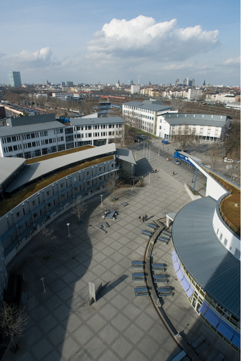
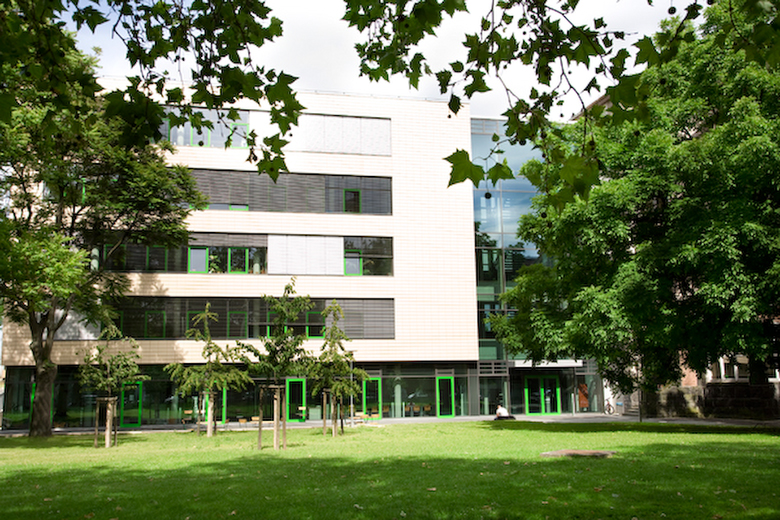

Die Hochschule Mannheim ist eine moderne Campushochschule mit einer lebendigen, über 100-jährigen Tradition, die uns Verpflichtung ist, mit innovativen Studienkonzepten die Herausforderungen der Zukunft anzunehmen. Die Hochschule Mannheim hat eine breite und interessante Palette von Studiengängen. Kennzeichen der Hochschule Mannheim ist die hohe Praxisrelevanz der akademischen Ausbildung. Wir betreuen unsere Studierenden in Kleingruppen. Moderne Institute, praktische Studiensemester, Kooperation mit der Wirtschaft, die Mitwirkung der Studierenden an Forschungs- und Entwicklungsprojekten und die Berufserfahrung der Professoren, Mitarbeiter und Lehrbeauftragten tragen dazu bei, dass sich den Absolventen unserer Hochschule hervorragende Berufschancen eröffnen.
 | Fakultäten | 9 |
| Studiengänge | 22 Bachelor / 10 Master |
| Professorinnen und Professoren | 178 |
| Sprachlehrkräfte | 7 |
| Studienplätze | 779 Bachelor im Wintersemester |